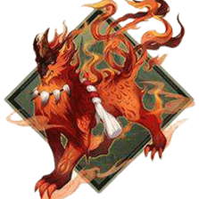

ほたるのくさ
cv. 諏訪彩花
手中拿著螢草的可愛少女
看上去十分柔弱、性格也是這樣
不過卻一直在努力支持自己的同伴
不希望自己成為累贅
同時也一直在關心和照顧小夥伴們
其實比起“真的能夠幫倒忙”
“想努力幫大家”的這份心情
已經很棒了哦
 式神介紹
式神介紹
故事
傳記一
昨天大家回來的時候，身上又都是傷痕累累的。
真是的，跟他們說了，不要在外面打架，不要跟別的妖怪起衝突，總是不肯聽。
也不願意告訴我到底發生了什麼事。
不行，今晚我要跟過去看看到底是怎麼回事！
「那傢伙也太強了！」，「這次一定要把我們的地盤贏回來。」
大家嘴裡這麼說著，嘟囔著走向了我們的地盤邊界。
傳記二
我聽到了一個陌生女孩子的聲音，我探出頭去。
大家居然在欺負一個女孩子，怎麼可以這樣。這次一定要好好地說他們一頓。
誒？那個女孩子、好凶呀。大家都被打倒了。誒誒誒？
「切，一個能打的都沒有」，女孩子可不能用這種兇惡的語氣說話哦。
那個扛著狼牙棒的女孩子往這邊看過來了。
嗚嗚嗚，她看到我了。
傳記三
「哈，這裡還藏著一頭。」我才不是「一頭」呢。
嗚哇哇，她發現我了嗎？狼牙棒砸下來了。
不、不能哭，不能哭。
「但是，不要哭什麼的，做不到啦。」
嗚哇，我好害怕啊。
推薦御魂

3攻擊套
攻攻攻/攻攻暴
前期建議選擇攻擊三件套，最大化螢草是治療量和輸出能力，對於刷本和沖級幫助都很大，如果擔心
螢草被秒殺的話，建議練一個椒圖保護她。

4樹妖+2攻擊
攻攻攻/攻攻暴
樹妖的效果可以使螢草的奶量更上一層樓，但要注意這是建立在一定有攻擊加成的基礎上，否則不如
攻擊三件套。